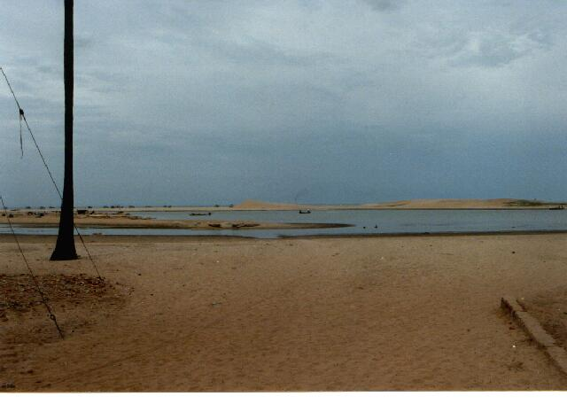

mullaivāyil (teṉ)
- Identifier: KV07
- Modern Name (NIC):
- Modern Name (M.I.): mullaivāyil (teṉ)
- Modern Name (Govt Press): tirumullaivācal
- Modern Name: Mullai vācal
- Modern District & Taluk: nākappaṭṭiṉam DT (cīrkāḻi TK)
- Old administrative location: Tanjore DT (Shiyally TK)
- Nearby town:
- Railway station: Cīkāḻi (S: 15km)
- Longit. 79 deg. 50'; Latit. 11 deg. 14' [KV07]
- C.D.Maclean-3: entry: SHIYALLY, p. 827, col. 2,
[Trimalvausal [tirumullaivācal], Village, Port, pop.3643,
at the mouth of an estuary, old Shiva temple,
lat. 11 deg. 14', long. 79 deg. 53']
- Location: according to PK: Cōḻa Nāṭu, Kāvēri Vaṭa Karai (KV07)
- Name inside hymns:
- Name inside PK: mullai vāyil
- Rank inside third volume of PIFI: 240
- Rank inside Civastala Mañcari: 240
- Rank on PY576 map: 91
- Total number of patikam-s: 1
- Campantar: 1 patikam
3 pictures taken on 1997 August 10th (Sunday afternoon)



[[A note on the shrine (VMS):
There are two shrines having name of Tirumullaivāyil;
one is near Cīrkāḻi eight miles to the East,
so this is called Teṉ Tirumullaivāyil;
the other one is two and half miles
to the Nort-East of Āvaṭi R.S.
so it is called Vaṭa Tirumullaivāyil]]
- Patikam 2_88